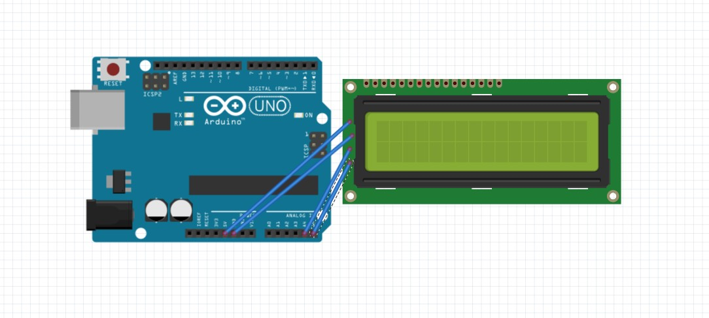
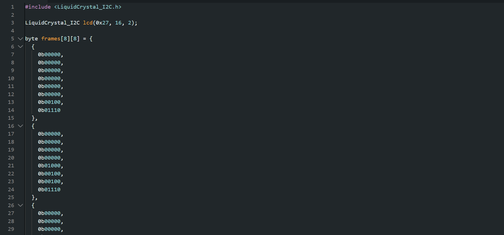
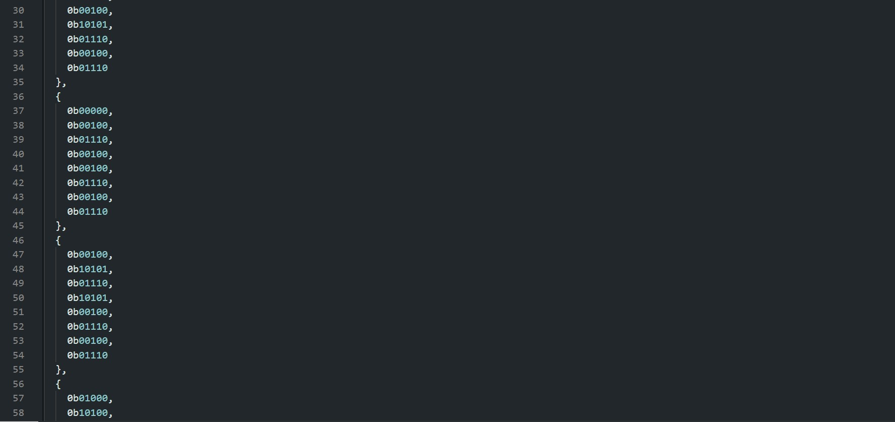
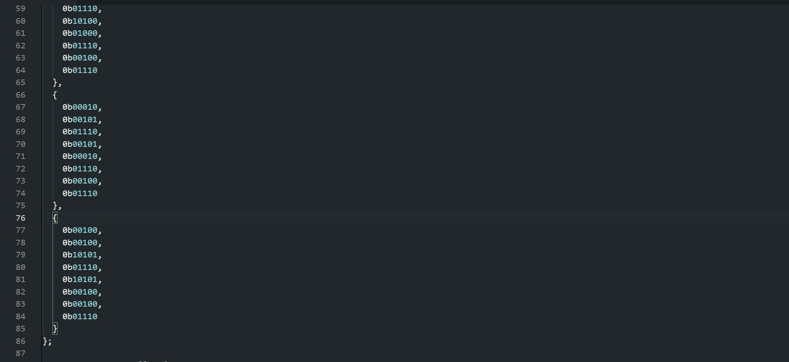
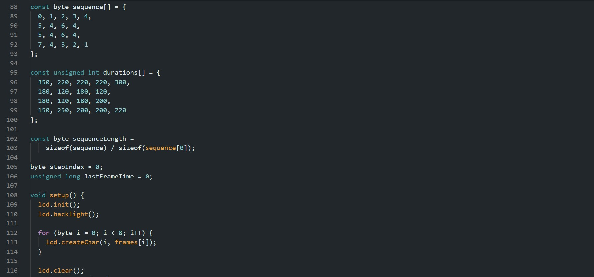
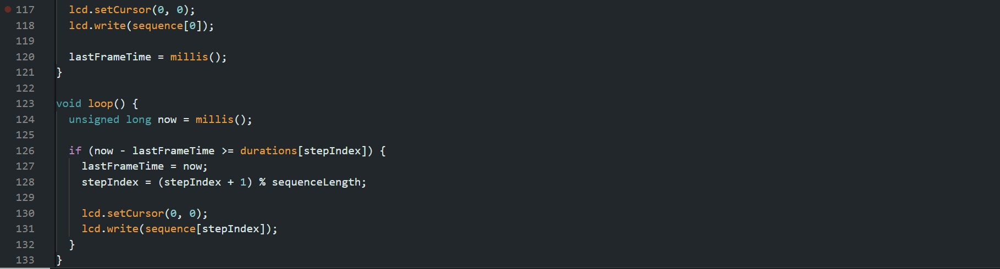

LCD1602 꽃 애니메이션
씨앗이 자라 꽃이 피고 흔들리는 모습을 한 칸의 LCD 문자로 표현하기
아두이노 LCD1602 · Custom Character 활용 과제
프로젝트 소개
이번 과제에서는 LCD1602의 첫 번째 줄 첫 번째 칸에 사용자 정의 문자를 표시해, 씨앗이 새싹과 꽃으로 자라는 과정을 애니메이션으로 구현했다. 꽃이 핀 뒤에는 좌우로 흔들리고 반짝이는 장면을 추가했다.
LCD의 한 문자 칸은 5×8 픽셀로 표현할 수 있기 때문에, 작은 픽셀 안에서도 변화가 구분되도록 장면을 나누어 구성했다.
01. 실제 작동 영상
아두이노에 연결한 LCD에서 꽃 애니메이션이 재생되는 모습이다.
demo.mp4라는 이름으로 업로드하면 이곳에 표시된다.
02. 구상 스케치 및 연결도
꽃의 성장 단계와 LCD 출력 모습을 구상한 스케치 사진이다.

sketch.jpg를 업로드하면 이곳에 표시된다.LCD1602와 Arduino Uno 핀 연결
LCD1602의 I²C 모듈을 Arduino Uno에 다음과 같이 연결했다.
| LCD 핀 | Uno 연결 |
|---|---|
| GND | GND |
| VCC | 5V |
| SDA | A4 |
| SCL | A5 |
I²C 변환 모듈이 연결된 LCD1602와 Arduino Uno R3 기준이다.
03. 아두이노 코드
작성한 코드를 캡처한 이미지다. 코드에서는 8개의 문자 패턴을 저장하고, 정해진 순서와 시간에 따라 LCD에 출력하도록 작성했다.
code1.jpg, code2.jpg, ... 와 같이 업로드하면 순서대로 표시된다.







코드 사진은 최대 10장까지 올릴 수 있으며, 업로드하지 않은 사진의 빈칸은 나타나지 않는다.
04. 동작 원리
1) 사용자 정의 문자 만들기
frames[8][8] 배열에는 씨앗, 새싹, 잎, 꽃봉오리, 핀 꽃, 좌우 흔들림, 반짝임의 모양이 저장되어 있다. 각 모양은 8줄의 이진수 데이터로 표현하며, lcd.createChar()를 이용해 LCD에 등록했다.
2) 프레임 순서 정하기
sequence[] 배열에 18개의 재생 단계를 지정했다. 꽃이 핀 다음에는 왼쪽과 오른쪽으로 기울어진 모양을 번갈아 출력해 흔들리는 것처럼 보이게 했다.
3) 프레임 전환 시간 조절하기
durations[] 배열에는 각 단계의 유지 시간을 120~350ms로 설정했다. millis()로 시간을 확인하고 다음 프레임을 출력하는 방식이므로, 각 장면에 다른 속도를 적용할 수 있다.
| LCD 규격 | 16열 × 2행 (I²C 주소 0x27) |
|---|---|
| 출력 위치 | 첫째 줄, 첫째 칸 (0, 0) |
| 문자 패턴 | 8개, 각 5×8 픽셀 |
| 재생 단계 | 18단계 |
| 반복 주기 | 약 3.61초 (설정한 시간의 합) |
05. 결과 및 고찰
문자 한 칸만 사용할 수 있다는 제약 때문에 복잡한 그림을 그리기는 어렵다. 그래서 여러 모양을 조금씩 다르게 만들어 순서대로 보여주는 방식으로 움직임을 표현했다.
특히 성장하는 부분은 형태가 점차 바뀌도록 하고, 꽃이 핀 이후에는 좌우 흔들림을 반복하도록 구분했다. 또한 프레임마다 시간을 다르게 설정하면 단순히 같은 속도로 그림을 바꾸는 것보다 동작의 차이를 나타낼 수 있다.
이번 작업을 통해 LCD의 사용자 정의 문자가 단순한 기호 표시뿐 아니라 간단한 애니메이션에도 활용될 수 있음을 확인할 수 있었다.